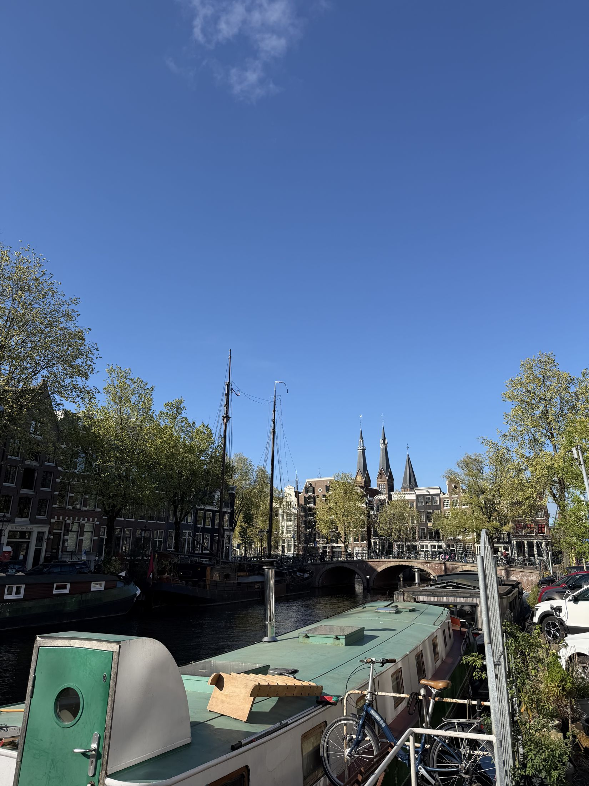
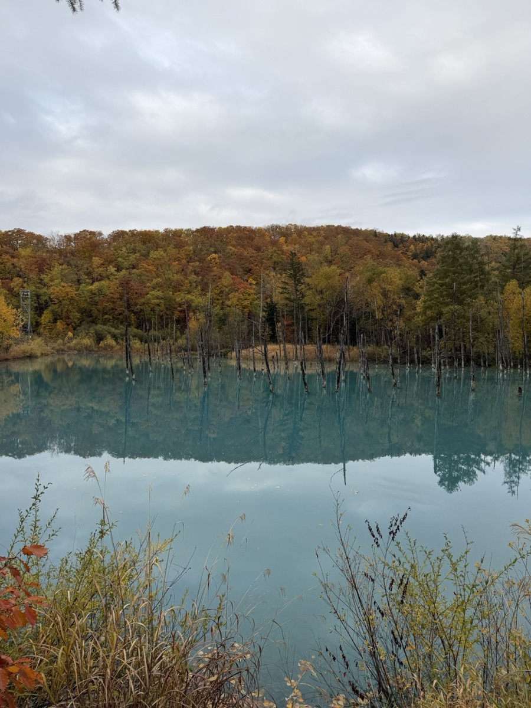
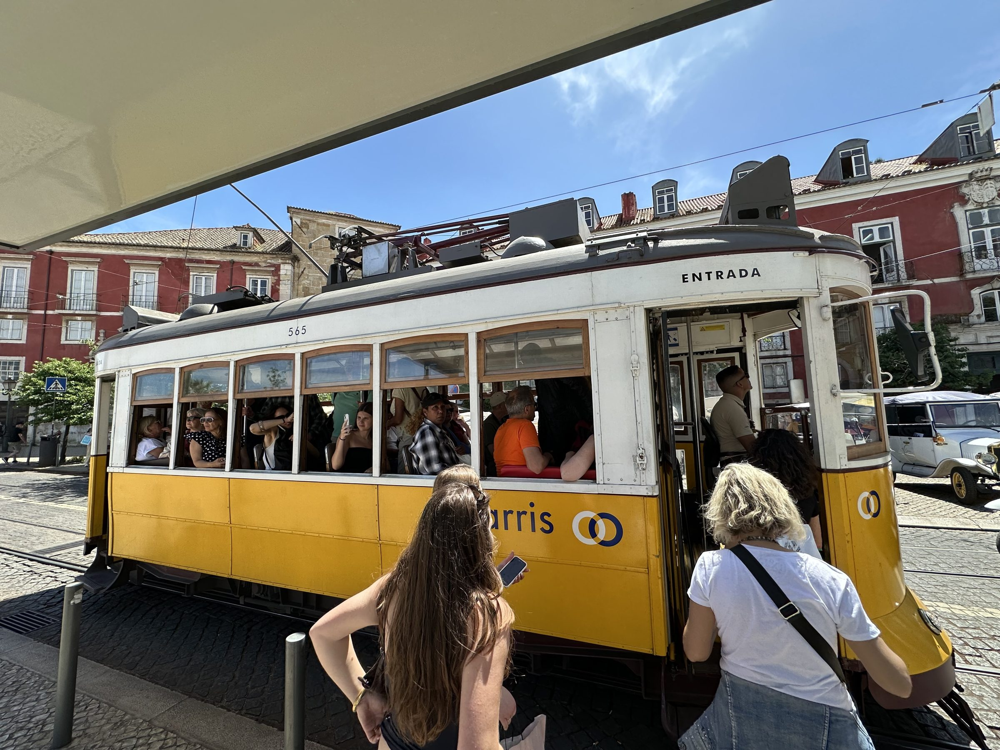
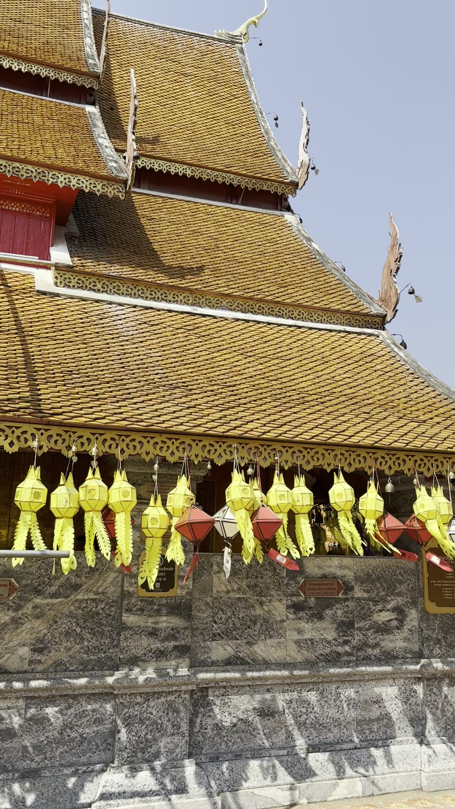
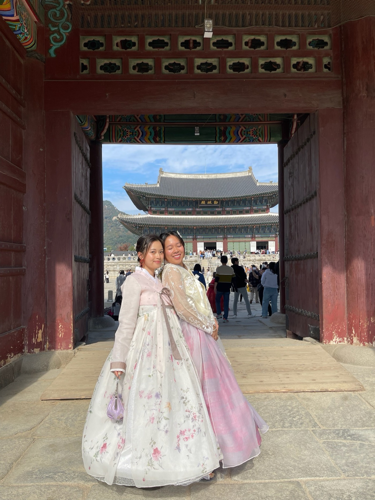
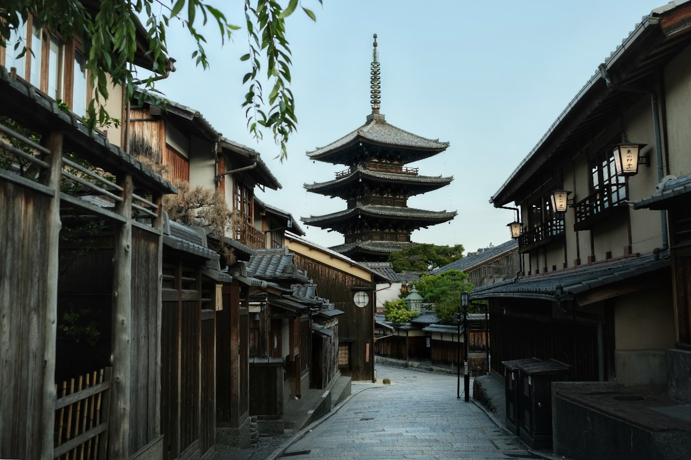

Travel
Where I've been and what I found there — trips documented one city at a time.

Turkey
Nine days across two worlds — imperial mosques and meyhane nights in Istanbul, then cave churches, canyon hikes, and a sunrise balloon flight over the fairy chimneys of Cappadocia.

Amsterdam
A long spring weekend in the Jordaan — canal rings, the Rijksmuseum, bikes and brown cafés, windmills on the Zaan, and the Keukenhof tulip fields at the absolute peak of the season.

Ringing In 2026 the Long Way
New Year's over eleven days — Bangkok's temples and a Muay Thai fight night, midnight fireworks from a boat on the Chao Phraya, then waterfalls, a market-to-table cooking class, and a bamboo villa in the Sidemen valley.

Hokkaido
A week in Sapporo at the hinge of autumn and first snow — crab feasts and soup curry, Noguchi's Moerenuma by bike, the Blue Pond at Biei, Moai guarding a Tadao Ando Buddha, and a mountain onsen in Jōzankei.

The Month Between Jobs
Twenty-nine days in the gap between an offboarding and an onboarding — omakase and a Grand Seiko in Tokyo, wine bars and a Muay Thai camp in Thailand, then Gaudí, El Greco, jazz, and fado across Iberia.

India & Thailand
Three weeks across South and Southeast Asia — auto-rickshaws in Hyderabad, a Muay Thai fight night and temple-lit rooftops in Bangkok, and the mountain wat above Chiang Mai. Shot entirely on video.

Kyoto & Seoul
A week through autumn-foliage Japan and into Korea — a Tokyo fashion day, Katsura Villa and Nijō Castle in Kyoto, then Seoul: a rainbow fountain on the Han and hanbok at the palace gates.

Japan, in Bloom
Twelve days with friends at the peak of cherry-blossom season — Ueno's sakura, Ginza coffee houses and Asakusa, Mt. Fuji from the Shinkansen, Osaka's Dōtonbori, and kimono in Kyoto.